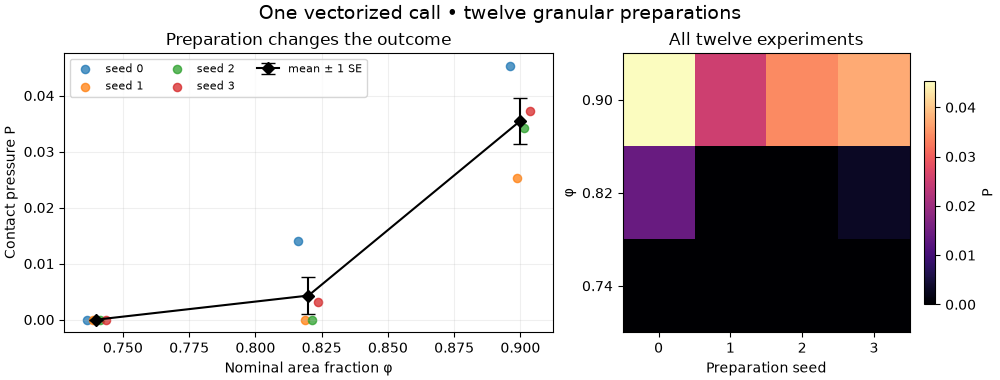
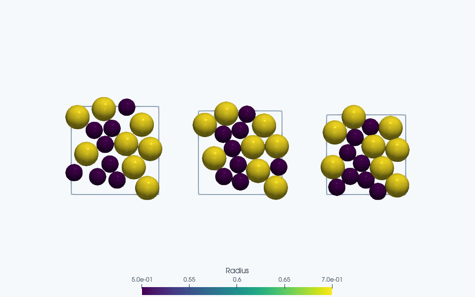

Note
Go to the end to download the full example code.
Run an ensemble of granular compaction experiments#
Relax twelve separate bidisperse disk packings in one vectorized call: three packing fractions and four random preparations at each fraction. Measure the distribution of contact pressure, rather than interpreting a single packing as a material property. The default has only sixteen disks per box and requires Matplotlib in addition to JaxDEM.
These are athermal, frictionless, periodic systems. Each starts from random positions and relaxes at its target density; this is a preparation ensemble, not quasistatic compression of a common equilibrium configuration. Small systems and four seeds illustrate the workflow without estimating a bulk jamming threshold or a precise confidence interval.
The experiment and its observables#
In two dimensions the nominal area fraction and contact pressure are
Compression has positive pressure. Overlaps are permitted by the soft contact model, so nominal disk area is counted even where disks overlap. The spring energy is \(U=\tfrac12\sum_{i<j}k\delta_{ij}^2\), with \(\delta_{ij}=\max(0,R_i+R_j-r_{ij})\). FIRE finds a local force-balanced configuration; its iterations are optimization steps rather than time. All lengths, masses and contact stiffnesses use consistent reduced units.
For \(S\) preparations at fixed \(\phi\), report each pressure and
The error bars below are one estimated standard error, not a confidence interval. Near a transition the distribution can mix nearly stress-free and load-bearing states; the individual points are essential context.
import jax
import jax.numpy as jnp
import matplotlib.pyplot as plt
import numpy as np
import jaxdem as jdem
from jaxdem.utils.contacts import compute_contact_pressure
jax.config.update("jax_enable_x64", True)
N = 16
packing_fractions = np.array([0.74, 0.82, 0.90])
seeds = range(4)
force_tolerance = 1e-7
max_relaxation_steps = 10_000
radii = jnp.array([0.5, 0.7] * (N // 2))
areas = jnp.pi * radii**2
materials = jdem.MaterialTable.from_materials(
[jdem.Material.create("elastic", young=1.0, poisson=0.3, density=1.0)]
)
Build matching states, then stack their independent data#
All replicas share particle count, force law and optimizer configuration. Box lengths, positions and optimizer states remain per-replica arrays. Direct batching requires compatible array shapes and static configuration; simulations with different particle counts should be grouped separately. Reusing a seed across fractions gives paired reduced initial positions. Different seeds at the same fraction are independent preparations.
states, systems = [], []
for phi in packing_fractions:
box_length = jnp.sqrt(areas.sum() / phi)
for seed in seeds:
state = jdem.State.create(
pos=box_length * jax.random.uniform(jax.random.key(seed), (N, 2)),
rad=radii,
mass=jnp.ones(N),
volume=areas,
)
system = jdem.System.create(
state=state,
domain_type="periodic",
domain_kw={"box_size": jnp.full(2, box_length)},
collider_type="naive",
rotation_integrator_type=None,
mat_table=materials,
minimizer=jdem.minimizers.fire,
minimizer_kw={"dt": 0.05},
)
states.append(state)
systems.append(system)
batch_state = jdem.State.stack(states)
batch_system = jdem.System.stack(systems)
assert batch_state.pos.shape == (len(packing_fractions) * len(seeds), N, 2)
def relax_one(state, system):
return jdem.System.minimize(
state,
system,
max_steps=max_relaxation_steps,
force_tol=force_tolerance,
torque_tol=force_tolerance,
)
One vectorized call, twelve separate minimizations#
vmap transforms the single-experiment function over a leading batch
axis; jit compiles the transformed computation. Each replica retains
its own convergence flag and iteration count. Batched termination waits
for the slowest active replica, so a difficult packing can dominate cost.
See JAX automatic vectorization.
This example uses forward execution of minimization; it does not
differentiate through FIRE’s convergence loop.
relax_batch = jax.jit(jax.vmap(relax_one))
result = relax_batch(batch_state, batch_system)
jax.block_until_ready(result)
if not np.all(np.asarray(result.converged)):
raise RuntimeError(f"Some packings failed to relax: {result.info}")
assert np.max(np.asarray(result.info.force_max)) <= force_tolerance
def pressure_one(state, system):
return compute_contact_pressure(state, system)[2]
pressure_batch = jax.jit(jax.vmap(pressure_one))
pressures = np.asarray(pressure_batch(result.state, result.system)).reshape(
len(packing_fractions), len(seeds)
)
assert np.all(np.isfinite(pressures))
assert np.all(pressures >= -1e-12)
mean_pressure = pressures.mean(axis=1)
standard_error = pressures.std(axis=1, ddof=1) / np.sqrt(len(seeds))
print("phi mean pressure standard error individual pressures")
for phi, mean, error, row in zip(
packing_fractions, mean_pressure, standard_error, pressures, strict=True
):
print(f"{phi:.2f} {mean:.6e} {error:.3e} {row}")
print(
"Relaxation steps:",
np.asarray(result.steps).reshape(len(packing_fractions), len(seeds)),
)
phi mean pressure standard error individual pressures
0.74 0.000000e+00 0.000e+00 [0. 0. 0. 0.]
0.82 4.299597e-03 3.340e-03 [1.40733479e-02 2.32946797e-08 7.67984583e-09 3.12500776e-03]
0.90 3.550703e-02 4.146e-03 [0.04529092 0.02523178 0.0341896 0.03731583]
Relaxation steps: [[125 215 125 183]
[391 427 471 616]
[395 486 329 492]]
Check a replica against an independent run#
Compare both the relaxed energy and pressure of the first dense packing. Agreement tests that stacking has preserved the individual experiment. Increasing the batch size should change throughput and uncertainty, not the equations of motion or contact parameters of an existing member.
check_index = (len(packing_fractions) - 1) * len(seeds)
single = relax_one(states[check_index], systems[check_index])
assert bool(single.converged)
np.testing.assert_allclose(
single.energy, result.energy[check_index], rtol=2e-5, atol=1e-10
)
np.testing.assert_allclose(
pressure_one(single.state, single.system),
pressures[-1, 0],
rtol=2e-5,
atol=1e-9,
)
print("Independent dense-packing energy and pressure agree with the batch.")
Independent dense-packing energy and pressure agree with the batch.
Show the spread, not only the mean#
The ParaView snapshots use the same seed at each fraction and preserve the physical disk radii as the box size changes. Preparation dependence is visible in the pressure scatter, especially in the middle fraction. These twelve packings do not establish an equation of state.
fig, (pressure_axis, map_axis) = plt.subplots(
1, 2, figsize=(10, 3.8), width_ratios=(1.7, 1), layout="constrained"
)
for column, seed in enumerate(seeds):
pressure_axis.scatter(
packing_fractions + (column - 1.5) * 0.0025,
pressures[:, column],
s=35,
alpha=0.75,
label=f"seed {seed}",
)
pressure_axis.errorbar(
packing_fractions,
mean_pressure,
yerr=standard_error,
color="black",
fmt="D-",
capsize=5,
label="mean ± 1 SE",
)
pressure_axis.set(xlabel="Nominal area fraction φ", ylabel="Contact pressure P")
pressure_axis.set_title("Preparation changes the outcome")
pressure_axis.legend(fontsize=8, ncols=3)
pressure_axis.grid(alpha=0.2)
pressure_map = map_axis.imshow(pressures, origin="lower", aspect="auto", cmap="magma")
map_axis.set(
xticks=list(seeds),
yticks=range(len(packing_fractions)),
yticklabels=[f"{p:.2f}" for p in packing_fractions],
xlabel="Preparation seed",
ylabel="φ",
title="All twelve experiments",
)
fig.colorbar(pressure_map, ax=map_axis, label="P", shrink=0.8)
fig.suptitle("One vectorized call • twelve granular preparations", fontsize=14)
plt.show()


ParaView rendering of this run’s VTKWriter output.
Left to right: phi=0.74, seed=0; phi=0.82, seed=0; phi=0.9, seed=0.
To extend the study, increase N and the number of seeds independently,
tighten the force tolerance, and compare preparation protocols. For larger
packings use a suitable neighbor-list collider and validate its capacity.
Benchmark with a device synchronization after warm-up: batching on a CPU
is not a promise of speedup, while a larger GPU batch may improve throughput.
Total running time of the script: (0 minutes 11.538 seconds)